地政学
ギテガは国土中央の高原にあり、湖岸のブジュンブラと国境方面を結ぶ道路の節点です。首都移転は地域均衡と統治の象徴ですが、経済機能はなお西の湖岸に重く残り、二都構造が政治の日常を形作ります。緊張も見えます。
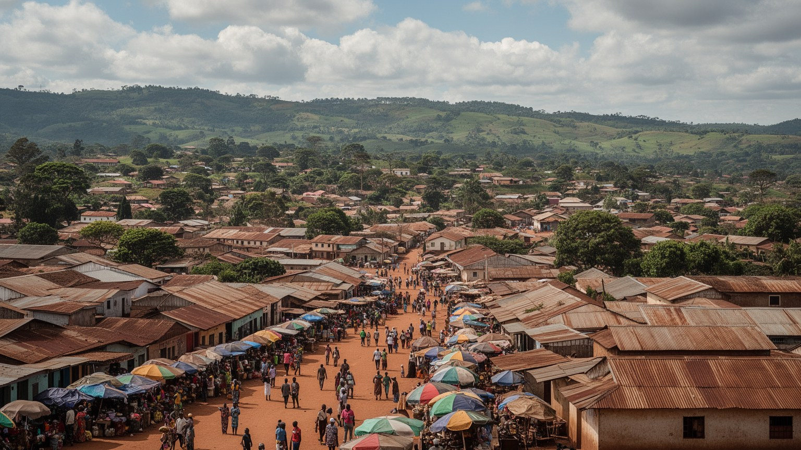
🇧🇮 ブルンジ / アフリカ / World City Atlas
ブルンジ中央高原に置かれた政治首都です。王国の記憶、国立博物館、太鼓の聖地、行政移転、農産物流通、宗教生活、内戦後の和解と貧困が同じ小さな都市に重なります。
中央高原の首都
ギテガは巨大な業務都市ではなく、内陸高原の道路、行政、教会、学校、市場が重なる首都です。ブジュンブラが経済の港口であり続けるため、首都性は権力の移転と生活の現実を分けて読む必要があります。
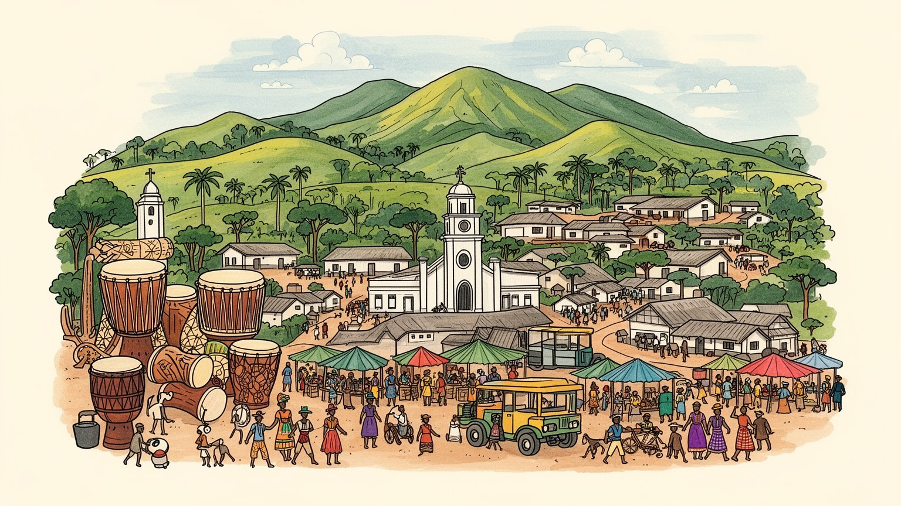
ギテガは国土中央の高原にあり、湖岸のブジュンブラと国境方面を結ぶ道路の節点です。首都移転は地域均衡と統治の象徴ですが、経済機能はなお西の湖岸に重く残り、二都構造が政治の日常を形作ります。緊張も見えます。
行政機関、学校、病院、教会、市場、農産物の集散が雇用を支えます。豆やバナナ、茶やコーヒーが街に入り、露店、修理、飲食、携帯送金、ラジオ情報、買い物、サッカー観戦、若者の仕事探しまで家計を左右します。
ギテガは旧王都の記憶、国立博物館、王宮跡、カリエンダ太鼓の聖地を通じて国民文化を語ります。カトリック大司教区やプロテスタント教会、モスクも日常にあり、祈りと行事が地域を結びます。地域の誇りを育てます。
観光客は博物館、ギショラの太鼓聖地、高原の丘、市場を訪れます。住民には水、電力、交通費、医療、物価、雇用が毎日の関心で、静かな首都の印象の背後に脆い生活基盤が見えます。観光と生活の距離も近いです。
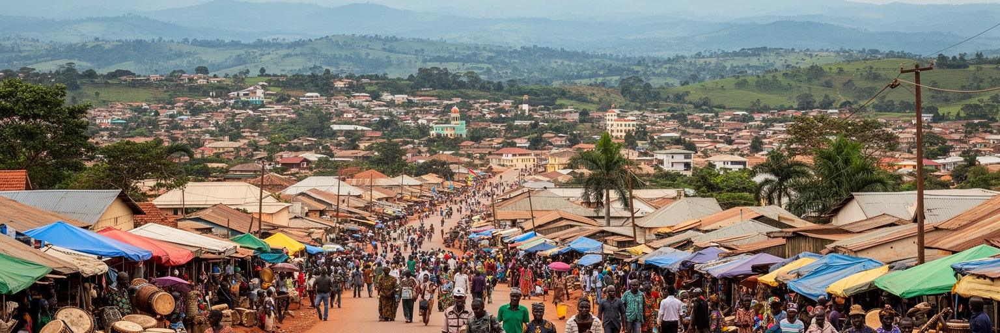
ギテガはブルンジの中央高原にあり、湖岸のブジュンブラ、北のンゴジ、東部のカルジやムインガ、南西のルモンゲ方面を結ぶ道路網の中継点です。標高の高い丘陵地に置かれているため、赤土の斜面、谷の農地、教会の塔、市場、行政施設が近い距離で見えます。鉄道や大きな空港で世界と直結する都市ではありませんが、内陸国の統治では道路の信頼性が首都機能を左右します。雨季の路面、燃料価格、バスやバイクタクシーの運賃は、役所へ行く人、学生、農産物を運ぶ商人に直接響きます。中央に位置することは地図上の公平さを示しますが、移動の負担を消すわけではありません。丘の上と谷底では水の得やすさ、農地への距離、学校までの道、医療施設への行きやすさが違います。周辺の村から市街へ入る人にとって、道は単なる移動路ではなく、作物を売り、薬を買い、行政手続きを済ませる生活線です。公共投資の遅れは、首都の威信より先に家計の時間を奪います。また、高原の分水嶺に近い位置は、水資源と農地保全の課題も街に近づけます。首都移転で道路整備への期待は高まりますが、舗装や排水が追いつかなければ、雨が政治と市場の予定を変えてしまいます。この負担の差は、首都整備の優先順位を住民がどう受け止めるかにも影響します。ギテガの地理は、首都という肩書きと、丘陵農村に囲まれた生活圏という実感を同時に読ませます。
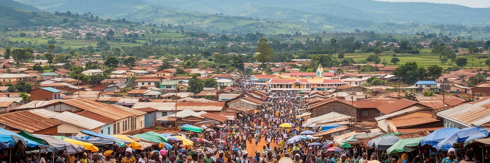
ギテガは二〇一九年に政治首都として正式化されました。これは単なる住所変更ではなく、湖岸の大都市ブジュンブラに偏ってきた権力を、国土中央へ戻す象徴的な決定です。ただし議会、官庁、外交、企業、港湾、金融、人材の流れは一度に移るものではなく、多くの実務はブジュンブラとの往復や二重配置を伴います。ギテガでは新しい庁舎、宿泊、道路、警備、住宅、行政サービスへの期待が生まれる一方、急な投資が地元住民の暮らしを押し上げるとは限りません。首都になると、土地の価格、賃貸住宅、ホテル需要、警備の配置、道路の優先順位も変わります。行政職員が移れば家族、学校、商店、医療も動き、昼の食堂、夜の小さな売店、ラジオで流れる公示、SNSで共有される求人まで生活圏が再編されます。二都構造が残る間は、会議、書類、予算、人の移動に余分な時間がかかります。首都機能の分散が地域均衡を生むか、行政の非効率を増やすかは、交通と情報の整備に左右されます。住民から見れば、首都移転は国家の大計であると同時に、窓口が近くなるかどうかの関心事でもあります。政治首都を読むには、国の理念だけでなく、移転に必要な予算、人材、交通、公共サービスを見ます。そのため、移転の成否は式典ではなく、窓口と道路が毎日機能するかで測られます。ギテガの首都性は、完成した制度ではなく、いま組み立てられている制度です。
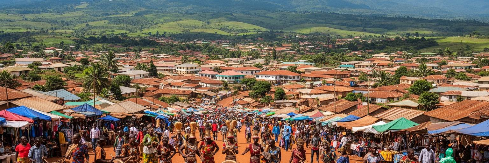
ギテガを特徴づけるのは、近代国家の首都である前に、ブルンジ王国の記憶を抱える場所だという点です。国立博物館や王宮跡、周辺の聖地は、王権、儀礼、太鼓、口承、植民地支配、独立後の国家形成を一つの物語として結びます。観光案内では文化遺産として語られますが、住民にとっては家族史、民族関係、学校教育、政治的記憶に触れる場所でもあります。王国の記憶は誇りであると同時に、植民地期の統治や独立後の対立を思い出させます。展示室に置かれた道具や王権の説明は、過去を整然と並べるだけではありません。どの言語で説明し、どの出来事を強調し、どの沈黙を残すかによって、国の自己理解が変わります。子どもたちは授業や遠足で展示を見て、高齢者は家族の語りと照らし合わせます。太鼓、地名、家族の記憶、ラジオで流れる式典の話題は、遠い王国を現在へ引き寄せます。観光客が見る遺産と、住民が背負う記憶は同じ形をしていません。保存の費用、資料の管理、専門職の育成も、記憶を支える現実的な条件です。ギテガの歴史を読むには、古い王都を懐かしむだけでは足りません。誰が歴史を展示し、誰の痛みが語られ、どの世代がそれを学ぶのかを見る必要があります。展示をどう更新するかも、和解と教育の質を左右します。小さな街の博物館は、地域の誇りを確かめ、国民の記憶を整理する重要な舞台です。
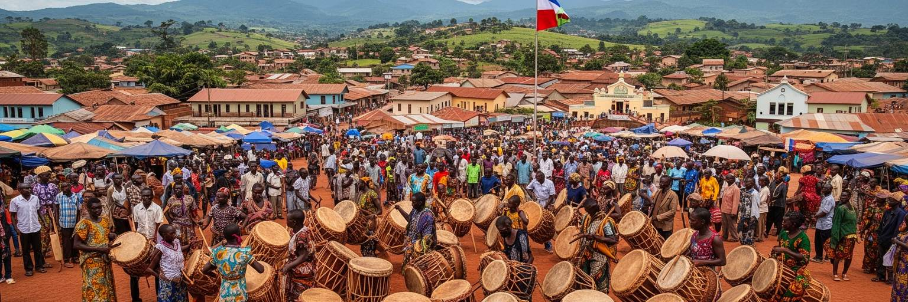
ギテガ周辺で重要なのが、ブルンジの王権と結びついた太鼓文化です。ギショラの太鼓聖地に代表される演奏は、観光ショーである前に、王国の儀礼、男性の身体技法、共同体の誇り、国家文化の象徴を含んでいます。大きな太鼓を担ぎ、跳び、打ち鳴らす動きは力強い視覚表現ですが、その背後には聖地の管理、演者の継承、儀礼の意味、商業化への緊張があります。文化が観光資源になるほど、誰が収入を得て、誰が伝統の解釈を決めるのかが問われます。演者の衣装、太鼓の材料、練習場所、若い担い手の育成、観客との距離は、文化を続けるための現実的な条件です。海外の注目は誇りを強める一方、短い公演だけで意味が消費される危うさも伴います。太鼓の音は祝祭を盛り上げ、夜の集まりや結婚式の余韻、ラジオやスマートフォンで聞く音楽の記憶ともつながります。同時に王権、土地、男性性、共同体の秩序を思い出させ、その意味を丁寧に伝えられるかが遺産の厚みを保ちます。観光の収入が衣装、楽器、練習、移動費に戻る仕組みも欠かせません。ギテガの太鼓文化は、内陸高原の静かな街に国際的な視線を引き寄せる一方、日常の宗教行事や地域行事とも切り離せません。街の誇りとして守るには、演じる人の生活も練習の場も守る必要があります。音の迫力だけでなく、記憶を次世代へ渡す仕組みとして読むと、街の文化的な重みが見えてきます。
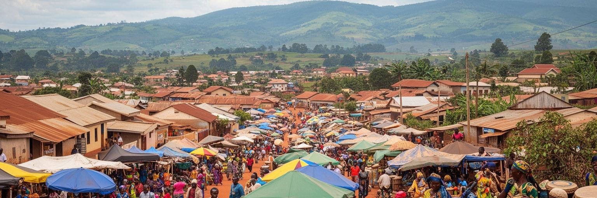
ギテガの経済は、首都機能だけでなく周辺農村との結びつきで成り立ちます。丘陵地では豆、トウモロコシ、キャッサバ、バナナ、野菜が栽培され、国全体ではコーヒーや茶も外貨を得る重要な作物です。市場には徒歩、バス、バイク、自転車で人と荷が集まり、食料、燃料、衣料、携帯通信、修理、簡単な飲食が日々の現金経済を作ります。農地が細かく分かれ、人口密度が高いブルンジでは、土地の不足と収入の低さが若者の選択肢を狭めます。市場で売られる野菜や穀物の価格は、雨、道路、燃料、国境取引、通貨の弱さに影響されます。小商いをする人は在庫を多く持てず、病気や葬儀、学費の支払いが家計をすぐ圧迫します。女性の露店、若者の運搬、修理職人、食堂の仕込みは、市場の目立たない労働です。行政移転で消費が増えても、その利益が農家や小商人まで届くには、公平な場所代と安定した物流が必要です。倉庫、冷蔵、信用、道路が弱ければ、収穫の価値は都市へ届く前に失われます。行政移転が雇用を増やす可能性はありますが、多くの人にとって生活を支えるのは小商いと農業です。市場の強さは、農村の不安定さを受け止める力でもあります。信用の薄さも負担です。ギテガを見ると、首都という言葉の裏に、食料価格、収穫、雨、輸送費、現金収入に左右される生活があることが分かります。
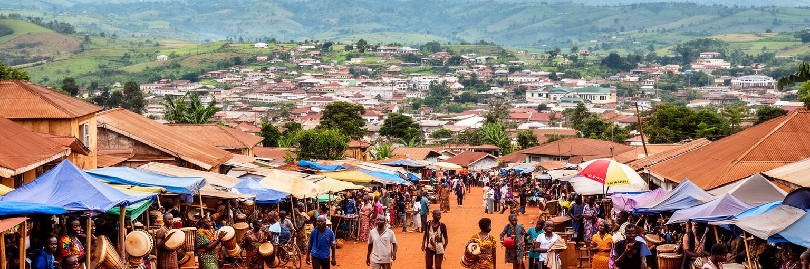
ギテガの生活では、教会、学校、病院、地域組織が強い存在感を持ちます。カトリック大司教区をはじめ、プロテスタント教会や小さな礼拝所、モスクは、信仰だけでなく教育、相談、福祉、和解の場としても働きます。日曜日の礼拝、合唱、結婚、葬儀、洗礼、地域の集まりは、家族と近隣の関係を確認する時間です。内戦と暴力を経験した社会では、宗教施設が傷を癒す言葉を与える一方、政治や民族関係から完全に自由でいられるわけではありません。教会の学校や医療活動は、公共サービスが薄い場所で重要な支えになります。説教、合唱、青年会、女性の集まりは、情報交換や相互扶助の回路にもなります。葬儀や病気のときに誰が訪ね、誰が費用を助けるのかは、制度よりも共同体の関係に左右されます。宗教施設は祈りの場所であると同時に、噂、求人、学費、移住、子どもの通学、高齢者の見守りが相談される広場です。国家の支援が十分でないとき、こうした非公式の支えが生活の継続を助けます。若者の失業、貧困、移住、家庭内の負担を前に、祈りは個人の慰めであると同時に共同体の安全網になります。夕方の鐘や合唱の声が丘に広がる時間には、街の不安も一時やわらぎます。共同体の信頼は、危機のときに初めて都市の基盤として現れます。ギテガの宗教生活を読むことは、建物の数を見ることではなく、人が困ったときにどこへ向かうのかを読むことです。
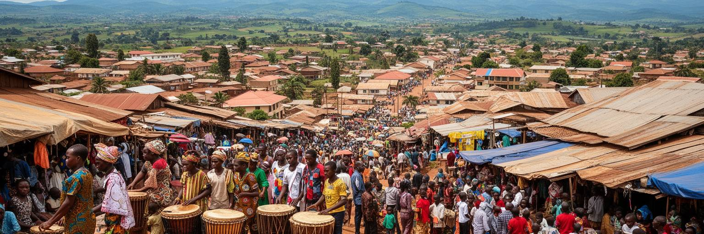
ブルンジは若い人口を抱える国であり、ギテガでも学校、職業訓練、大学、教会系教育機関への期待が大きくなっています。首都機能が移ることで行政職、建設、警備、宿泊、飲食、交通、通信の仕事が増える可能性はありますが、安定した雇用へ届く人は限られます。多くの若者は学費、家族の農作業、交通費、言語、情報へのアクセスに左右されながら進路を選びます。キルンディ語の日常、フランス語や英語の教育、スワヒリ語圏との接続は、仕事や移動の可能性を変えます。都市へ出ても家族を支える責任は残り、農村に戻れば土地の狭さが壁になります。インターネットや携帯電話は情報を広げますが、通信費や電力の不安定さが学習を止めることもあります。女子教育、若い母親の支援、職業訓練、奨学金、学校から職場への橋渡しは、首都の社会政策として重要です。若者が政治的な不満や移住だけを選ばずに済む道を作ることが、都市の安定にもつながります。図書館、実習先、起業支援、安心して集まれる公共空間も、若い首都には必要です。教育は貧困から抜ける道として期待されますが、卒業しても仕事が少なければ失望も深まります。人口の若さは負担であると同時に、制度を作り直す力にもなります。ギテガの未来は、首都らしい建物を増やすことより、若者が学び、働き、街に残れる道を作れるかにかかっています。
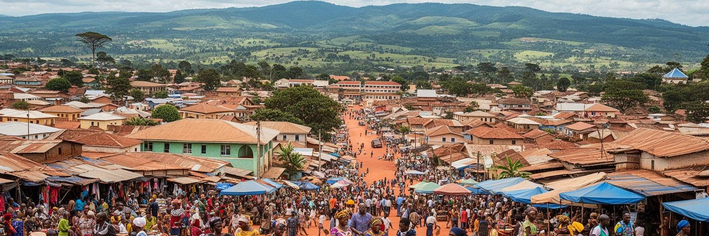
ギテガの日常は、首都という肩書きよりも、水、電気、道路、医療、物価、移動手段に強く左右されます。中心部では行政施設、市場、学校、教会、病院が近くにありますが、周辺の丘に暮らす人にとっては徒歩やバイク移動の負担が大きくなります。雨季には道路の状態が悪くなり、乾季には水の確保や農作物の収量が心配になります。停電や通信の不安定さは、店、学校、病院、行政手続き、夜に携帯を充電してSNSを見る時間にも影響します。燃料や輸入品の価格が上がると、都市の小さな商店、通学、病院への移動、食卓の豆料理やバナナ料理まで変わります。家庭では水くみ、調理、洗濯、子どもの世話が女性や年長の子どもに偏りやすく、生活基盤の不足は時間の貧困として現れます。住宅も重要です。職員や学生が増えるほど家賃は上がり、中心部に近い土地を持たない世帯は周辺へ押されます。首都化が生活を便利にするかどうかは、低所得層にも届く公共サービスで決まります。夜間の照明、清潔な市場、歩きやすい道は、女性や子ども、高齢者の安全にも直結します。都市の発展を語るとき、高い建物や新しい庁舎は目立ちますが、生活を支えるのは給水、排水、清掃、照明、公共交通、診療所、薬、学校給食のような地味な基盤です。こうした基盤が整ってこそ、首都移転は住民の利益になります。ギテガの暮らしを読むには、首都らしさと生活基盤の薄さが同じ街路に並ぶことを見落とせません。
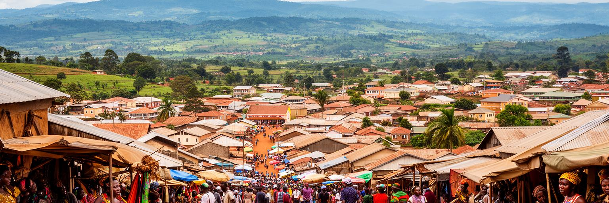
ギテガ観光は、大量の消費を前提にした大都市観光とは違います。国立博物館、王宮跡、ギショラの太鼓聖地、高原の丘、市場、教会、周辺の村を組み合わせ、ブルンジの歴史と日常に近づく旅になります。宿泊や交通の選択肢は限られ、情報も多くないため、訪問者には時間の余裕と地域への敬意が必要です。文化遺産は写真を撮る対象である前に、住民が記憶を守り、儀礼を続け、生活の中で意味を与えている存在です。小規模な観光では、ガイドの説明、移動の交渉、食事の場所、写真を撮る許可が旅の質を決めます。市場では豆、バナナ、香辛料、布、手工芸を見ながら買い物の声を聞き、夕方にはラジオの音、礼拝の歌、サッカーをする子どもの歓声が混じります。観光客が少ないからこそ、ひとつの訪問が地域の収入や印象に与える影響も大きくなります。安全情報、道路事情、現地の案内人、宗教施設での振る舞いを確認することは、旅の基本になります。観光が増えるほど、遺産を守る費用と地域の生活を守る配慮を両立させる必要があります。訪問者が地元の時間感覚を尊重すると、短い滞在でも学びは深くなります。観光収入が地域へ届けば、演者、ガイド、宿、飲食店、手工芸に機会を作れますが、外からの期待が伝統を単純化する危険もあります。静かな観光ほど、説明する人と聞く人の関係が大切になります。ギテガを訪れる価値は、派手な名所の数ではなく、小さな街が国の歴史をどのように抱えているかを静かに見られる点にあります。
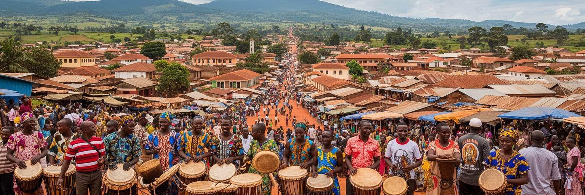
ギテガを語るとき、内戦、虐殺、政治的暴力、貧困の記憶を避けることはできません。ブルンジ社会は民族分類、植民地統治、独立後の権力闘争、難民、帰還、土地問題を経験してきました。街の穏やかな高原風景の背後には、失われた家族、移住、刑務所、学校での記憶、政治への警戒があります。同時に、住民は市場を開き、礼拝に集まり、子どもを学校へ送り、結婚式や葬儀を行い、日常を続けています。和解は大きな声明だけでなく、隣人として暮らし続ける小さな手続きです。過去を語ることが安全でない場面では、沈黙も生活を守る方法になります。土地の境界、帰還した家族、若者の失業、政治的な噂は、平穏な日常の下で緊張を残します。学校や教会や市場は、人が同じ空間を使い続ける場所であり、対立の記憶を薄める場にも、再び不信を強める場にもなります。社会の回復は、制度改革と日常の信頼の両方を必要とします。記念や追悼のあり方も、誰を悼み、誰が語れるのかという難しい問いを含みます。貧困、若者の失業、食料不安、医療へのアクセス、政治的自由の制約は、過去の傷を現在の不安へつなげます。過去を忘れないことと、今日の暮らしを守ることは切り離せません。日々の挨拶も信頼を少しずつ作ります。ギテガの社会課題を読むことは、被害の記憶と生活の継続を同時に見ることです。
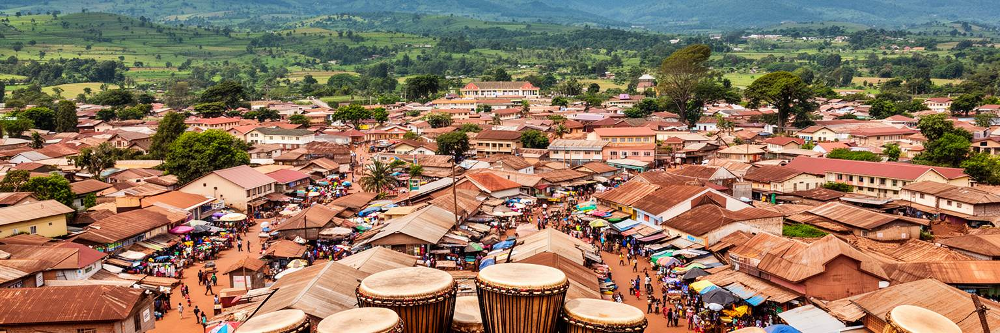
ギテガは世界経済を動かす巨大都市ではありません。それでも世界都市地図の中で重要なのは、首都、記憶、貧困、宗教、農村、若い人口、国家形成の課題が、非常に小さな都市空間に凝縮しているからです。ブジュンブラが湖と商業の窓口であり続ける一方、ギテガは国の中心をどこに置くのかを問い直す象徴になりました。王国の遺産と太鼓文化は国民文化を支え、行政移転は地域均衡への願いを示し、市場と丘陵農村は日々の生活を支えます。しかし首都の称号だけでは、雇用、水、電気、教育、医療、政治的信頼は十分に整いません。むしろ小さな都市だからこそ、国家の約束と住民の生活との差が街路で見えやすくなります。新しい庁舎、古い記憶、祈り、市場、若者の不安が近接し、都市の評価軸を広げます。ギテガを読むことは、都市の重要性を高層ビルやGDPだけで測らない練習です。世界の首都には、富の集中を示す場所もあれば、国家がまだ制度を組み立てている途中の場所もあります。ギテガは後者の姿をよく示し、首都とは何を約束する言葉なのかを問い返します。そこで見えるのは、権力の場所よりも、制度が生活を支えられるかという実務の重さです。その問いは、遠い国の例外ではなく、首都を持つすべての国に関わります。小さな首都の街路には、国家が過去を整理し、若者に未来を渡せるかという大きな問いが置かれています。